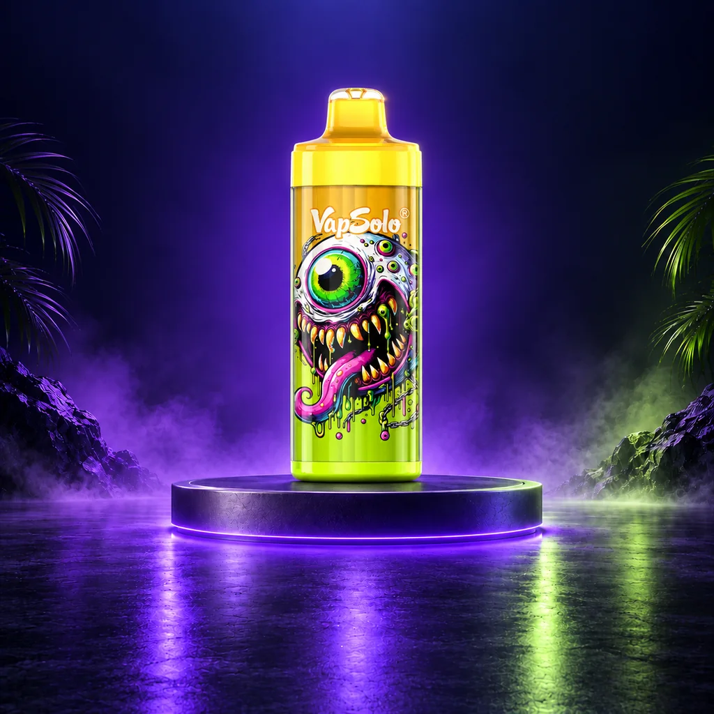

VapSolo King Pro 65K
King Pro 65K se describe con control inteligente de vapor, resistencia mesh de 1,0 Ω y batería recargable. Las 65.000 caladas anunciadas son orientativas.
Descuentos indicados por la tienda externa
| Cantidad | Descuento |
|---|---|
| 3 o más unidades | -10% |
| 6 o más unidades | -15% |
| 10 o más unidades | -20% |
| 50 o más unidades | -50% |
Características publicadas
| Caladas anunciadas | Hasta 65.000* |
|---|---|
| Resistencia | Mesh Coil 1,0 Ω |
| Batería | 850 mAh |
| Puerto de carga | USB Tipo-C |
| Dimensiones | 45 × 45 × 124 mm |
¿Qué lo diferencia?
Frente a los modelos múltiples, King Pro 65K se define por sus datos técnicos publicados: batería, USB-C y resistencia mesh. Es un cigarrillo electrónico recargable en el sentido de su batería, no una promesa de duración.
Recargable, pod o rellenable: diferencias →Sabores descritos
El material local disponible no permite confirmar un listado completo para King Pro 65K sin confundirlo con King Pro 40K. Por eso no trasladamos sabores de otra referencia: consulta el selector de la ficha externa de la variante exacta antes de comprar.
Preguntas frecuentes
¿Qué significa que tenga batería recargable?
Que la batería se carga por USB-C; consulta las instrucciones del fabricante para un uso correcto.
¿Qué sabores hay?
Depende de la variante y de la disponibilidad de la tienda externa.